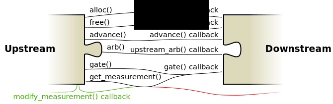

Gate- and measurement streams
The gatestream interface connects frontends to backends, frontends to operators, and operators to backends. There is a slight difference between the three to do with the measurement path, but for the most part they are the same. The following graphic shows the functions and callbacks used to form the interface on either side.

The green datapaths only exist if the upstream plugin is an operator. The red datapaths only exist if the downstream plugin is an operator.
Allocating and freeing qubits
DQCsim allows upstream plugins to allocate qubits within the downstream plugins at all times. This was done to provide a means for qubit mapping operators to determine whether upstream qubits are in use or not, and because it seems obvious in general coming from the classical world. Similar to a classical computer, a backend with limited resources must make map the qubits that are actually in use appropriately.
The alloc() function takes the number of qubits that are to be allocated as
an argument, as well as a list of ArbCmds. The ArbCmds can for instance be
used for various things, such as assigning a name to qubit registers for
debugging purposes or specifying error model information on a per-qubit basis.
In response, DQCsim allocates unique indices for the requested qubits and
returns them to the algorithm immediately. It also asynchronously sends an
allocation request through the gatestream, which causes the alloc() callback
to be called on the other end. This function takes the qubit indices that
DQCsim allocated for the qubits and the list of ArbCmds as argument.
free() can be used to free previously allocated qubits. If these qubits are
still entangled, the backend should collapse the state in some way; however, it
is up to the backend to decide how to do this. free() only takes the list of
qubit indices that are to be freed as arguments.
Qubit indices are assigned by DQCsim in a deterministic way. The first allocated qubit receives index 1. Subsequent allocations receive the next index. This means that freed qubit indices are never reused; if a backend wants to reuse indices internally, it must maintain its own mapping. Index 0 is reserved for marking invalid qubits and the end of a qubit list in the C API.
Sending gates
DQCsim internally represents gates using the following pieces of data:
- an optional name;
- a list of target qubits;
- a list of control qubits;
- a list of measured qubits;
- an optional unitary matrix, sized appropriately for the number of qubits in the target list;
- an
ArbDataobject that may contain classical arguments and/or additional information specifying the behavior of the gate.
It is not currently possible to send all the gates allowed by the above representation through the C, C++, or Python APIs. Specifically, only the following classes of gates can be constructed:
- unitary gates, which consist of one or more target qubits, a unitary matrix, and zero or more control qubits;
- z-basis measurement gates, which consist of one or more measured qubits and nothing else;
- custom gates, which have a name (required), zero or more target qubits, zero
or more control qubits, zero or more measured qubits, an optional gate
matrix, and
ArbDatainformation.
A backend must process gates according to the following algorithm.
On the receiving end, the behavior is standardized as follows.
- If the gate does not have a name:
- if there is a matrix:
- turn the matrix into a controlled matrix with the appropriate number of control qubits (which may be zero), and
- apply the matrix to the concatenation of the control and target qubits;
- measure every qubit in the
measureslist in the Z basis. Note that this should be supported in addition to the application of a unitary gate.
- if there is a matrix:
- Otherwise, if the gate has a name recognized by the backend implementation, the behavior is up to the backend implementation.
- Otherwise, the backend should return an error.
Measurement results
Measurement objects in DQCsim consist of the following:
- (usually) the index of the measured qubit;
- the measured value, which may be zero, one, or undefined (to model a failed measurement);
- an
ArbDataobject that may contain additional information about the measurement.
The upstream plugin will store the result of the latest measurement performed
on a per-qubit basis. This storage can be queried using the get_measurement()
function. Measuring the same qubit twice without calling get_measurement() in
between is fine; in this case, the result of the first measurement is
discarded.
DQCsim requires that every qubit in the measures list of a gate results in
exactly one measurement being returned. Furthermore, it is illegal to return
measurement data for a qubit that was not measured. This has to do with
internal optimizations in the communication protocol. DQCsim will check whether
you fulfill these requirements, and issue warnings if you don't. The stored
measurement results become undefined in a potentionally non-deterministic way
after violating the protocol in this way, so it is important to fix these
warnings when you get them.
Note that operators do not need to return all measurement results immediately.
Specifically, if they propagate the measurement gate further downstream in some
way, the qubits measured by that gate must not be returned immediately.
Instead, these measurement results pass through the modify_measurement()
callback when they become available. modify_measurement() takes one
measurement result as an argument and can return zero or more measurements,
which will then be passed on to the upstream plugin. The only thing that
matters, ultimately, is that the measurements received by the upstream plugin
correspond exactly to the qubits it measured.
Passing time
Gates in DQCsim are modeled as being performed sequentially and instantaneously. Among other things, this allows operators to insert gates into the gatestream at any time, without having to worry about violating boundary conditions. However, DQCsim does have a basic concept of time.
Specifically, an integral cycle counter is maintained for every gatestream
interface. This cycle counter can be advanced by the specified number of cycles
using the advance() function, which results in the advance() callback being
called for the downstream plugin. Other than that, DQCsim does nothing with
this timing information.
This mechanism was introduced to provide a standardized way for upstream
plugins to specify how much time is passing to downstream plugins. This is
important specifically for error model operators, which may randomly insert
gates in response to the advance() callback to decohere the quantum state.
Gatestream arbs
In addition to the above, the upstream plugin can send ArbCmds to the
downstream plugin. These operate like synchronous remote procedure calls,
taking an ArbCmd as argument and sending an ArbData or error message in
response.
This mechanism can for instance be used to tell the downstream plugin to dump its quantum state for debug purposes.